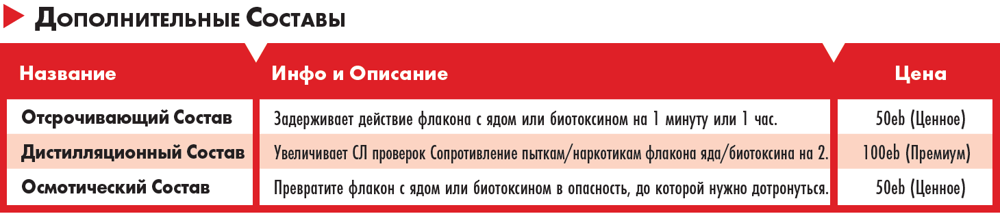
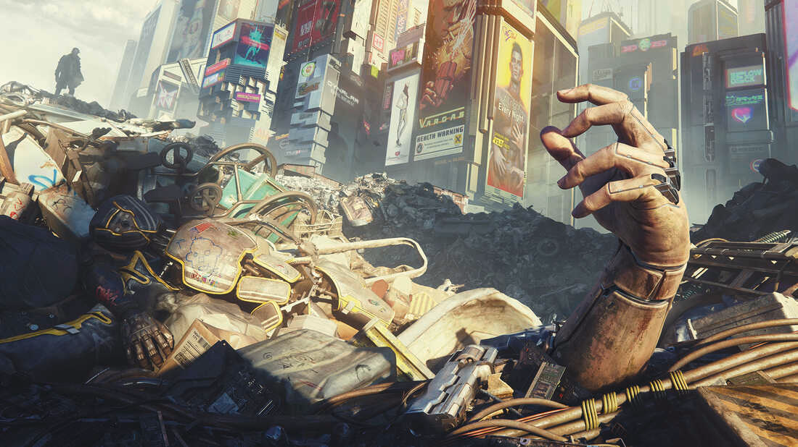

Другие Способы Пострадать
Огонь
🔴 Если ты находишься в огне — Горишь — до тех пор, пока ты не используешь действие, чтобы потушить себя, ты получаешь урон по напрямую в ПЗ в конце твоего хода. Броня не разрушается. Помни, что каждый ход длится всего три секунды. Урон растёт каждый ход.
| Интенсивность | Примеры | Эффект |
|---|---|---|
| Слабый | Пламя от древесины | 2 урона напрямую в ПЗ |
| Сильный | пламя от бензина | 4 урона напрямую в ПЗ |
| Смертельный | Термит | 6 урона напрямую в ПЗ |
Радиация
🔴 Низкий уровень радиации убивает не сразу. Через какое то время ты заболеешь и потом умрёшь, вероятней всего от рака. Это зависит от интерпретации ГМ.
🔴 Высокий уровень радиации опасен сразу же. Каждый ход, пока ты остаешься в очаге радиации, ты считаешься слабо горящим (смотри "Находиться в огне"), но ты не можешь использовать действие, чтобы потушить себя, пока не покинешь очаг. Если ты находишься в чрезвычайно опасной зоне, например, в протекающем реакторе, то вместо этого считается, что ты смертельно горишь.
Захлебывание и Удушье
🔴 Персонажи могут задерживать дыхание на количество минут, равное их ТЕЛ. Когда ты больше не можешь задерживать дыхание, ты начинаешь захлёбываться. В начале хода, если ты захлёбываешься, ты получаешь урон, равный твоему ТЕЛ, напрямую в Пункты Здоровья. Этот урон игнорирует броню и не разрушает ее.
🔴 Задыхаетесь вы по такому же принципу, как и Захлёбываетесь, но иногда появляются дополнительные эффекты. Если ты Задыхаешься в космосе, то в конце хода ты получаешь дополнительные 1d6 урона к ИНТ, РЕА и ЛВК от пребывания в вакууме. Если ИНТ достигнет 0, ты мертв. Эти повреждения СТАТ будут отменены если тебе удастся глотнуть воздуха.
Электричество
🔴 Когда тебя бьет током, ты немедленно получаешь 6d6 урона.
Этот урон блокируется броней, как обычно.
Если не отойти от источника удара током, то урон будет повторяться в конце каждого твоего хода,
начиная со следующего Хода
Падение
🔴 Падающие персонажи каждый ход полетают вниз 40 метров. В момент, когда персонаж больше не находится на твердой поверхности, если рядом есть край или уступ, он получает одну попытку спастись от падения с помощью проверки Атлетики СЛ 15. Проверка не требуется, если у тебя есть Рука-крюк, Пистолет-Крюк и тому подобное.
🔴 При падении на землю персонажи, упавшие с 10 и более метров, получают 2d6 урона за каждые 10 метров падения (броня поглощает урон) и, если они не пройдут проверку Атлетики СЛ15, получают Критическое Повреждение "Перелом Ноги". Персонажи с 2 киберногами не получают этот урон и не получают Критическое Повреждение. Но киберноги не помогут при падении с 30 метров и более. Здравый смысл также подсказывает, что если ты по какой-то причине упал с небоскреба без парашюта, то не стоит делать СпасБроска — ты труп.
Яды
🔴 Когда тебя отравляют или накачивают наркотиками, ты должен сделать проверку на Сопротивление Пыткам/Наркотикам против СЛ из таблиц ниже. Если ты провалил проверку, то получаешь эффект яда или наркотика. Твоя броня не разрушается. Уличные наркотики, их действие и зависимость подробно описаны в соответствующем разделе.
| Интенсивность | Примеры | СЛ сопротивления пыткам/наркотикам | Эффект |
|---|---|---|---|
| Слабый | Белладонна, токсичные отходы | 11 | 1к6 урона напрямую в ПЗ |
| Сильный | Мышьяк | 13 | 2к6 урона напрямую в ПЗ |
| Смертельный | Биотоксин, Дизайнерские наркотики, рыбный яд | 15 | 3к6 урона напрямую в ПЗ |
| Тип | Эффект | Цена |
|---|---|---|
| Флакон с Биотоксином | Потратив действие, можно смазать любое Лёгкое оружие ближнего боя. В течении следующих 30 минут, вместо обычного урона, оружие смазанное биотоксинами заставляет мясную цель выполнить проверку сопротивления пыткам/наркотикам СЛ 15. Если проверка провалена цель получает 3d6 урона по ПЗ (минут броню) | 500ed (дорогое) |
| Флакон с ядом | Потратив действие, можно смазать любое Лёгкое оружие ближнего боя. В течении следующих 30 минут, вместо обычного урона, оружие смазанное ядом заставляет мясную цель выполнить проверку сопротивления пыткам/наркотикам СЛ 13. Если проверка провалена цель получает 2d6 урона по ПЗ (минут броню). | 100ed (премиум) |

| Название состава | Описание | Цена |
|---|---|---|
| Отсрочивающий | Если этот состав смешать с Флаконом яда или Биотоксином в качестве действия, пользователь может отсрочить действие вещества на одну минуту или на один час после того, как цель отравит своё тело ядом. | 50ed (ценное) |
| Дистилляционный | В качестве действия этот состав можно смешать с Флаконом яда или Биотоксином, чтобы увеличить СЛ сопротивления пыткам/наркотикам на 2. | 100ed (премиум) |
| Осмотический | Если этот состав смешать с Флаконом яда или Биотоксином в качестве действия, вещество получает возможность проникнуть в тело человека через кожу. Затем яд может быть нанесён на поверхность размером до 2 квадратных метров. Первое мясное существо, которое коснётся этой поверхности размером мясной часть своего тела, подвергается воздействию яда. яд сохраняется на поверхности до 1 часа и может быть смыт водой. Персонаж может заметить нанесенный ядовитый Осмотический состав, сделав проверку Внимательности СЛ 17. | 50ed (ценное) |
